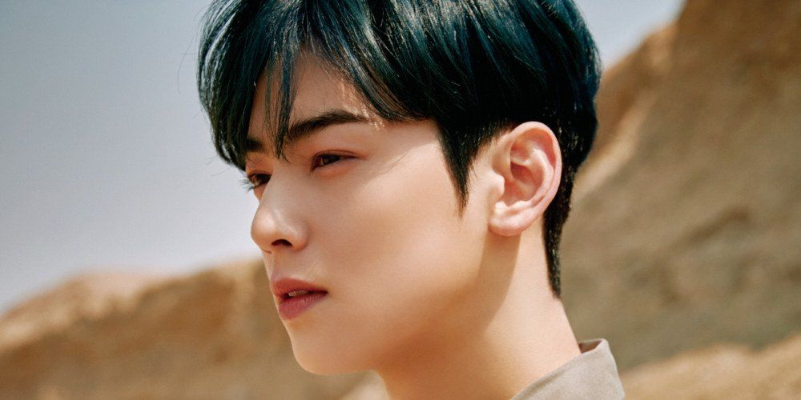

Cha Eun-woo
Verdadeiramente Belo
A pessoa mais talentosa de todos os tempos

SOBRE
Lee Dong-min mais conhecido pelo seu nome artístico Cha Eun-woo, é um cantor, dançarino, ator e modelo sul-coreano. Ele é integrante do boy group sul-coreano ASTRO.
ELE
- Nascimento: 30 de março de 1997 (idade 24 anos), Gunpo, Coreia do Sul
- Altura: 1,83 m
- É lindo
- Outras ocupações: Ator, modelo
- Grupo musical: Astro (Desde 2016)
Outras séries
- Handsome Tigers
- Hae-Ryung, a historiadora
- Top Management
- Gangnam Beauty
- Sweet Revenge
Voltar